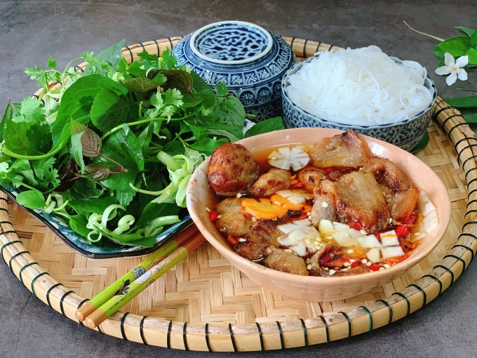

Bún chả

Mô tả
Bún chả hấp dẫn nhờ những miếng thịt nướng thơm ngon kết hợp cùng nước chấm chua ngọ tạo nên hương vị đặc trưng.
Bún chả Hà Nội mang trọn vẹn nét tinh hoa ẩm thực của Hà thành, là món ăn được nhiều người Việt Nam yêu thích.
Nguyên liệu
- Bún tươi sợi nhỏ
- Thịt ba rọi rút sườn
- Thịt nạc dăm đầu mềm hoặc thịt nạc vai xay nhuyễn
- Cà rốt, su hào, củ cải trắng
- Rau sống
- Các loại gia vị và nước chấm
Các bước thực hiện
- Ba rọi rửa sạch, ướp gia vị và để thấm khoảng 30 phút rồi nướng chín
- Thịt xay ướp với gia vị, nước mắm 30 phút cho thấm rồi làm thành viên tròn dẹt, nướng chín
- Su hào, cà rốt, củ cải gọt vỏ, ngâm nước muối, để ráo rồi tỉa hoa lát mỏng, trộn với giấm, đường để ngấm rồi cho vào bát nước mắm
Trình bày
Cho nước mắm vào tô kèm thịt nướng, chả băm ăn cùng bún tươi, rau sống.
Quay về trang chính